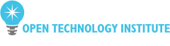
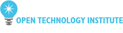

The Outreach Program for Women (OPW) helps women (cis and trans) and genderqueer get involved in free and open source software. We provide a supportive community for beginning to contribute any time throughout the year and offer focused internship opportunities twice a year with a number of free software organizations.
Apply
Application process is now open for the new round of the Outreach Program for Women internships. The application deadline is October 22, 2014 and internship dates are December 9, 2014 to March 9, 2015. Coding, design, documentation and other projects are available. The applicants are asked to select a project with one of the participating organizations and collaborate with a mentor listed for that project to make a relevant contribution to the project during the application process. Detailed information about the background for the program, requirements for participants, how to select a project, and how to make a contribution is available.
The accepted participants work remotely, while being guided by their mentor, and receive $5,500 stipend. It's expected that the participants are able to have the internship work be a primary focus during the internship dates and spend 40 hours a week on it.
Apply to participate!Participants
40 interns were accepted for May - August 2014 round of the Outreach Program for Women! 5 interns, who applied for both the Outreach Program for Women and Google Summer of Code, were accepted for Google Summer of Code after coordination between administrators of both programs! Interns accepted for December 2014 - March 2015 round will be listed here at 7pm UTC on November 12.
Find out who participated in the last round!Sponsors
The Outreach Program for Women is organized by the GNOME Foundation. The internships in the May - August 2014 were generously sponsored by the following organizations and companies:
Equalizer

Promoters


Includers

 



 Become a sponsor!
Become a sponsor!
Partners
Red Hat supports the Outreach Program for Women by contributing its employee time towards the organization of the program.
Software Freedom Conservancy supports the Outreach Program for Women by contributing its employee time towards the organization of the program.

Ropes & Gray helps the Outreach Program for Women by kindly providing pro bono legal assistance for the program.

About
The Outreach Program for Women (OPW) was inspired by Google's Summer of Code and by how few women applied for it. The GNOME Foundation first started the OPW with one round in 2006, and then resumed the effort in 2010 with rounds organized twice a year. In the May-August 2012 round, the Software Freedom Conservancy joined the OPW with one internship with the Twisted project. In the January-April 2013 round, many other free and open source organizations joined the program.
This program is a welcoming link that connects talented and passionate newcomers with people working in free and open source software and guides them through their first contribution. Through OPW, participants learn how exciting and valuable work on software freedom can be, while helping us to build a more inclusive community.
Follow @fossopw on Twitter to get the latest news.